7. 재료
재료 모델은 *Material로 지정한다. 고유이름을 가지며 이름은 중복하여 지정할 수 없다. 재료모델은 응력-변형률 관계를 포함하여 요소에 따라 다양한 구성관계식을 정의하는데 사용된다. 다음은 지원하는 재료모델과 각 재료모델이 지원하는 구성관계식을 정리한 것이다.
| TYPE | Description | Usage |
|---|---|---|
| IsoElasticity | Isotropic Elasticity | Uniaxial and Multiaxial Stress-Strain Relation |
| OrthoElasticity | Orthotrop Elasticity | Multiaxial Stress-Strain Relation |
| vonMises | von Mises Plasticity | Uniaxial and Multiaxial Stress-Strain Relation |
| Tresca | Tresca Plasticity | Multiaxial Stress-Strain Relation |
| MohrCoulomb | Mohr Coulomb Plasticity | Multiaxial Stress-Strain Relation |
| DruckerPrager | Drucker Prager Plasticity | Multiaxial Stress-Strain Relation |
| UGeneric | Uniaxial eneric | Uniaxial Stress-Strain Relation |
| USteel | Uniaxial Steel | Uniaxial Stress-Strain Relation |
| GapHook | Uniaxial Gap Hook | Uniaxial Stress-Strain Relation |
| Cohesive | Cohesive Material | Traction-Relative Displacement Relation |
| Acoustic | Acoustic Property | Property of Acoustic Element |
응력-변형률 관계는 크게 일축 및 다축 응력-변형률 관계로 구분할 수 있으며, 다축 응력-변형률 관계는 평면응력, 평면변형, 축대칭, 쉘, 3차원(일반) 응력 조건으로 세분할 수 있다. 요소에 따라서 필요한 응력-변형률 관계가 다르다. 예를 들어 보요소는 일축, 쉘요소는 다축중 쉘조건을 지원하는 재료모델을 사용해야 한다. 예를 들어 vonMises 는 일축 및 다축 응력-변형률 관계를 모두 지원하지만 Tresca는 다축 응력-변형률만 지원한다. 따라서 보 요소의 재료모델로 vonMises는 사용할 수 있지만 Tresca는 사용할 수 없다. 반대로 UGeneric, USteel, GapHook 등은 일축재료모델이므로 솔리드 요소나 쉘 요소 등에서는 사용할 수 없다.
한편, Spring, EarthSpring, MovingSpring 요소에서는 일축재료모델을 자신의 구성관계를 정의하는데 차용하여 쓸 수 있다. 여기에는 다음과 같은 4가지 존재할 수 있다.
- Force-Displacement : Translational spring
- Moment-Rotation : Rotation spring
- Force-Velocity : Translational damper
- Moment-Angular Velocity : Rotational damper
또한 Interface 요소이고 재료의 거동을 방향별로 독립적으로 지정하고 하는 경우에도 일축재료모델을 적용할 수 있다.
- Traction-Displacement : Interface element
또한 보요소에서 전단과 비틂 거동에 비선형성을 스프링처럼 고려하고자할때에도 일축 재료 모델을 적용할 수 있다.
- Scaled shear force-shear strain : Beam element
- Scaled torsional moment-rotation : Beam element
이와 같이 일축 재료 모델을 빌려와서 사용하는 경우, 응력-변형률 관계를 필요한 구성관계식으로 물리적 의미없이 변환하여 사용한다. 예를 들어 X방향 스프링의 경우 일축 재료모델의 응력-변형률 관계를 빌려 올 경우 하중-변위 관계로 취급한다. 이때 응력과 하중, 변형률과 변위는 물리적인 의미없이 1:1로 변환된다.
*Environment, TYPE=UnitSystem를 통해 모델에 대한 단위계가 도입되는 경우, hfVisualizer 등에서 전체 단위계를 일괄 변경하는 경우 일축 재료 모델을 빌려와 사용하는 경우 단위계 변환에 주의해야 한다. 이를 위해 빌려오는 경우 일출 재료 모델을 최초 차용할 당시의 단위계를 reference unit system으로 지정하여 내부적으로 변환을 수행한다.
*Material
Define material
*Material, TYPE=type, Name=name
...datalines depdending type
Keyword line
-
TYPE=type: type of materis.
- IsoElasticity: Isotropic Linear Elastic Material
- OrthoElasticity: Orthotropic Linear Elastic Material
- vonMises: von Mises plasticity
- Tresca: Tresca plasticity
- MohrCoulomb: Mohr-Coulomb plasticity
- DruckerPrager: Drucker-Prager plasticity
- UGeneric: Uniaxial generic
- USteel: Uniaxial steel
- GapHook: Uniaxial gap-hook
- Cohesive: Cohesive material
- Acoustic: Material for acoustic solid elements
-
Name=name: material name
*Material Type=IsoElasticity
Define isotropic elasticity material
*Material, Type=IsoElasticity, Name=name
E, nu, alpha, density
First dataline
- E: elastic modulus (required)
- nu: Poisson’s ratio (optional, default 0.)
- alpha: themal expansion coefficient (optional, default 0.)
- density: density (optional, default 0.)
Example
*Material, Type=IsoElasticity Name=iso
200., 0.2 # E, nu, alpha, density
*Material Type=OrthoElasticity
Define orthotropic elasticity
*Material, Type=OrthoElasticity, Name=name
E1,E2,E3, G12,G23,G31, nu12,nu23,nu31, a1,a2,a3, density, angle, cs
First dataline
- E1, E2, E3: Elastic moduli(required)
- G12, G23, G31: Shear moduli (required)
- nu12, nu23, nu31: Poison's ratios(required)
- a1,a2,a3: thermal expansion coefficient (optional, default 0)
- density: density(optional, default 0.)
- angle: angle in laminar condition for *Section, TYPE=CompositeShell (optional, default 0.)
- cs: material coodinate system(optional). If not given, global coordinate system is used for material coordinates
angle은 *Section, TPYE=CompositeShell을 정의할 때 사용되는 laminar stress condition에서의 국부 좌표계 정의를 위한 각도이다. cs는 이를 제외한 모든 응력 조건에 사용된다.
Example
*Material, Type=OrthoElasticity Name=ortho
200.,100.,100., 50.,30.,30., 0.12, 0.12, 0.12, 1E-6, 1.2E-6, 1.4E-4, 7810., 0, cs
# E1, E2, E3, G12, G23, G31, nu12, nu23, nu31, a1, a2, a3, density, angle, cs
*Material, Type=OrthoElasticity Name=ortho
200.,100.,100., 50.,30.,30., 0.12, 0.12, 0.12, 1E-6, 1.2E-6, 1.4E-4, 7810., 90
# E1, E2, E3, G12, G23, G31, nu12, nu23, nu31, a1, a2, a3, density, angle, cs
*Material Type=vonMises
Define von Mises plasticity(J2 plasticity)
*Material, Type=vonMises, Name=name
E, nu, alpha, density
yield, H, theta, Kinf, K0, delta
*Material, Type=vonMises, Name=name
E, nu, alpha, density
isoHardFunc, kinHardFunc|H
First dataline
- E: elastic modulus (required)
- nu: Poisson’s ratio (optional, default 0.)
- alpha: themal expansion coefficient (optional, default 0.)
- density: density (optional, default 0.)
Second dataline for value (첫 항이 함수명이 아닌 경우)
- yield: Initial yield value (required)
- H: slope after initial yield (optional, default 0)
- theta: Mixed hardening parameter (optional, default 0)
- Kinf: Saturation hardening시의 파라미터(optional, default 0)
- K0: Saturation hardening시의 파라미터(optional, default 0)
- delta: Saturation hardening시의 파라미터(optional, default 0)
Second dataline for function (첫 항이 함수명인 경우)
- isoHardFunc: Isotropic hardening function. (required)
- kinHardFunc or H: Kinematic hardening function or modulus(optional, default 0)
Value로 지정하는 경우
Value로 지정하는 경우 다음의 수식을 적용한다.
- Linear mixed hardening model
- Saturation isotropic hardening and linear kinematic hardening model
\(\small\bar{H}\)는 상수이며, \(\small\theta = 0\)이면 kinematic hardening만을, \(\small\theta = 1\)이면 isotropic hardening만을 적용하는 것이다. \(\small 0 \le \theta \le 1\)의 조건을 만족해야 한다. Linear mixed hardening model에서 \(\small dK/d \kappa = (1-\theta)\bar{H}\) 가 isotropic hardening molulus가 되고, \(\small (1-\theta) \bar{H}\)이 kinematic hardening modulus가 된다.
\(\small\bar{K}_\infty = \bar{K}_0\)또는 \(\small\delta=0\) 조건을 만족할 경우 linear mixed hardening에 해당한다. Linear mixed hardening에서 \(\bar{H}\)는 음의 값을 가질 수 있으나, Saturation isotropic hardening and linear kinematic hardening model에서는 \(\small\bar{H} \ge 0\), \(\small\bar{K}_\infty \ge \bar{K}_0 \gt 0\), \(\small\delta \ge 0\) 조건을 만족해야 한다.
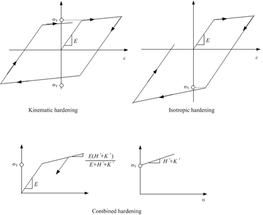
Fig. 7.2-1. Linear hardening
Function으로 지정하는 경우
재료에 대한 1축 인장 실험결과가 있다면, 이를 이용하여 절절히 calibration을 수행할 수 있다. 이 경우 Type=Function을 적절히 이용하면 된다. 주의할 점은 isotropic hardening과 kinematic hardening이 동시에 존재할 때 2차탄성계수 가 그림 7.2-2에 제시된 것과 같은 식을 만족하도록 구성해야 한다는 점이다.
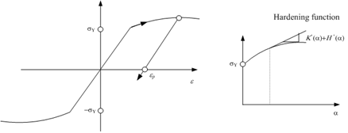
Fig. 7.2-2. Nonlinear hardening
Example
# Linear isotropic hardening case
*Material, Type=vonMises, Name=steel1
2000000. # E, nu, alpha, density
3000., 300.,1. # yield, H, theta, Kinf, K0, delta
# Linear kinematic hardening case
*Material, Type=vonMises, Name=steel2
2000000. # E, nu, alpha, density
3000., 300., # yield, H, theta, Kinf, K0, delta
# Nonlinear isotropic hardening case
*Function, Type=MultiLinear, Name=isoFunc
0. 200.
0.01 210.
*Material, Type=vonMises, Name=steel3
200000. # E, nu, alpha, density
isoFunc # isoHardFunc, kinHardFunc|H
# Nonlinear isotropic hardening, linear kinematic hardneing case
*Material, Type=vonMises, Name=steel4
200000. # E, nu, alpha, density
isoFunc, 20. # isoHardFunc, kinHardFunc|H
# Nonlinear isotropic/kinematic hardneing case
*Material, Type=vonMises, Name=steel5
200000. # E, nu, alpha, density
isoFunc, kinFunc # isoHardFunc, kinHardFunc|H
*Material Type=Tresca
Define Tresca plasticity material model
*Material, Type=Tresca, Name=name
E, nu, alpha, density, StrainHardening|IsotropicHardening
{yield,dyield}|yieldFunc
First dataline
- E: elastic modulus (required)
- nu: Poisson’s ratio (optional, default 0.)
- alpha: themal expansion coefficient (optional, default 0.)
- density: density (optional, default 0.)
- StrainHardening|IsotropicHardening: hardening type(optional, default “StrainHardening”)
Second dataline
- yield,dyield: initial yield value(required), and the derivative after initial yielding(optional, default 0.)
- yieldFunc: yield function(required)
Tresca 재료모델은 항복함수와 소성퍼텐션(flow potential)이 다음과 같다.
경화법칙(hardening rule)은 strain hardening, work harding, isotropic associative hardening rule이 적용가능한데, Tesca 모델에서는 work hardening과 associative isotropic hardening이 동일하다.
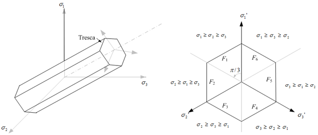
Fig. 7.2-3. Tresca yield criteria
Example
*Function, Type=MultiLinear, Name=trYield
0. 0.
0.01 10.
0.02 15
# no hardening case with sy = 20.
*Material, Type=Tresca, Name=steelT1
2E6, 0.18, 1E-5, 7850 # E, nu, alpha, density
20 # yield, dyield
# linear hardening case with strain hardening
*Material, Type=Tresca, Name=steelT2
2E6, 0.18, 1E-5, 7850 # E, nu, alpha, density
20, 0.1 # yield, dyield
# linear hardening case with work hardening
*Material, Type=Tresca, Name=steelT3
2E6, 0.18, 1E-5, 7850 # E, nu, alpha, density
20, 0.1, StrainHardening|WorkHardening # yield, dyield, StrainHardening|WorkHardening
# nonlinear hardening case with work hardening
*Material, Type=Tresca, Name=steelT4
2E6, 0.18, 1E-5, 7850 # E, nu, alpha, density
trYield # yieldFunc
*Material Type=MohrCoulomb
Define Mohr-Coulomb material
*Material, Type=MohrCoulomb, Name=name
E, nu, alpha, density, StrainHardening|IsotropicHardening
{coh,dcoh}|cohFunc
{fric,dfric}|fricFunc
{dila,ddila}|dilaFunc
First dataline
- E: elastic modulus (required)
- nu: Poisson’s ratio (optional, default 0.)
- alpha: themal expansion coefficient (optional, default 0.)
- density: density (optional, default 0.)
- StrainHardening|IsotropicHardening: hardening type(optional, default “StrainHardening”)
Second dataline
- coh,dcoh: initial value (required) and derivative of cohesion (optional, default 0.)
- cohFunc: function name of cohesion function (required)
Third dataline (frictional quatities)
- fric,dfric: initial value(required) and derivative of friction angle. (optional, default 0.)
- fricFunc: function name of friction angle function (required)
Forth dataline (dilatent quanties)
- dila,ddila: initial value and derivative of dilatent angle (default 0., 0.)
- dilaFunc: function name of dilatent function (optional)
마찰각(frictional angle) 및 팽창각(dialtent angle)의 단위는 라디안이 아닌 degree가 사용된다. 팽창각 관련 값이 마찰각과 같다면, 연관소성흐름 법칙(associative flow rule)이 적용된다. 그렇지 않으면 비연관소성흐름법칙(non-associative flow rule)이 적용된다. 초기 점착력(cohesion0은 반드시 0이 아닌 값을 지정해야 한다. 경화법칙으로 associative isotropic hardening(즉, IsotropicHardening)을 적용할 때는 일정한 마찰각과 팽창각(constant frictional and dilatent angle)이 사용되어야 한다.
Mohr-Coulomb 재료모델은 다음과 같은 항복함수와 소성퍼텐셜을 사용한다.
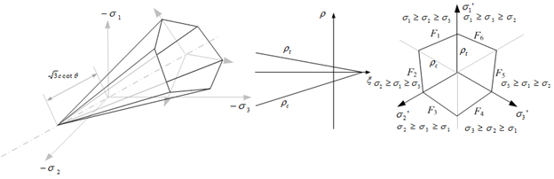
Fig. 7.2-4. Mohr-Coulomb yield criteria
The hardening rule includes strain hardening and isotropic hardening. In the Mohr-Coulomb model, work hardening does not exist.
Example
# associative flow rule, no hardening
*Material, TYPE=MohrCoulomb, Name=soil1
2E6, 0.18, 1E-5, 7850
20 # coh, dcoh
35 # fric, dfric
35 # dila, ddila
# associative flow rule, strain hardening
# linear hardening of cohesion, constant friction and dilatency
*Material, TYPE=MohrCoulomb, Name=soil2
2E6, 0.18, 1E-5, 7850
20,3.
35,
30.
# associative flow rule, associative isotropic hardening
# linear hardening of cohesion, constant friction and dilatency
*Material, TYPE=MohrCoulomb, Name=soil3
2E6, 0.18, 1E-5, 7850, IsotropicHardening
20,3.
35,
30.
# associative flow rule, associative isotropic hardening,
# linear hardening of cohesion, friction
*Material, TYPE=MohrCoulomb, Name=soil4
2E6, 0.18, 1E-5, 7850
20,3.
35, 0.2
35, 0.2
# non-associative flow rule, strain hardening,
# nonlinear hardening of cohesion, friction, dilatency
*Function, Name=cohFunc
0., 20.
0.001, 25.
0.002, 25.
*Function, Name=fricFunc
0. 35.
0.001, 40.
0.002, 45.
*Function, Name=dilaFunc
0. 30.
0.001 35.
0.002 40.
*Material, TYPE=MohrCoulomb, Name=soil5
2E6, 0.18, 1E-5, 7850
cohFunc
fricFunc
dilaFunc
*Material Type=DruckerPrager
Define Isotropic elasticity material
*Material, Type=DruckerPrager, Name=name
E, nu, alpha, density, StrainHardening|IsotropicHardening
beta
coh,dcoh|cohFunc,
af,daf|afFunc
ap,dap|apFunc
First dataline
- E: elastic modulus (required)
- nu: Poisson’s ratio (optional, default 0.)
- alpha: themal expansion coefficient (optional, default 0.)
- density: density (optional, default 0.)
- StrainHardening|IsotropicHardening: hardening type(optional, default “StrainHardening”)
Second dataline
- beta: beta (required)
3rd dataline
- coh, dcoh: initial value(required) and derivative of cohesion (optional, default 0.,0.)
- cohFunc: function name of cohesion(required)
4th dataline (frictional quantity)
- af, daf: initial value and derivative of alpha. ( default 0., 0.)
- afFunc: function name of alpha (required)
5th dataline (dilatent quantity)
- ap, dap: initial value(required) and derivative of alphaP (dilatency) (optional, default 0.)
- apFunc: function name of alphaP (required)
마찰각(frictional angle) 및 팽창각(dialtent angle)의 단위는 라디안이 아닌 degree가 사용된다. 팽창각 관련 값이 마찰각과 같다면, 연관소성흐름 법칙(associative flow rule)이 적용된다. 그렇지 않으면 비연관소성흐름법칙(non-associative flow rule)이 적용된다. 초기 점착력(cohesion0은 반드시 0이 아닌 값을 지정해야 한다. 경화법칙으로 associative isotropic hardening(즉, IsotropicHardening)을 적용할 때는 일정한 마찰각과 팽창각(constant frictional and dilatent angle)이 사용되어야 한다.
Drucker-Prager 재료모델에서 항복함수와 소성포턴셀은 다음과 같다.
▪ Flow potential : same to yield function
경화법칙은 strain hardening과 isotropic hardening이 존재한다. Drucker-Prager 모델에서는 work hardening이 존재하지 않는다.
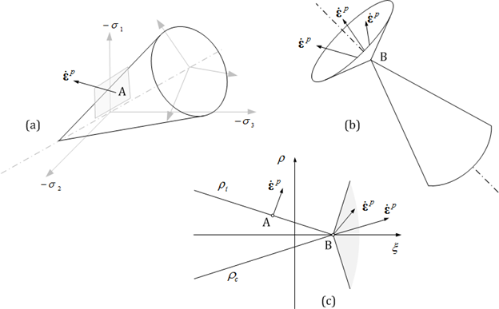
Fig. 7.2-5. Flow rule of Drucker-Prager model
Example
*Material, TYPE=DruckerPrager, Name=concreteDP
2E6, 0.18, 1E-5, 7850, StrainHardening # E, nu, alpha, density, StrainHardening|IsotropicHardening
4 # beta
12.3 # coh,dcoh|cohFunc,
20 # af,daf|afFunc
20 # ap,dap|apFunc
*Material Type=UGeneric
Define uniaxial generic material
*Material, Type=UConrete, Name=name
Compression|Tension, EnvFunc, Plastic|Secant|IEFunc,
...
alpha, density
First dataline and optional second dataline
- Compression|Tension: Indicates whether the current line defines compression-side or tension-side properties.
- EnvFunc: Envelope function (required)
- Plastic|Secant|CIEFunc: Plastic unloading, Secant unloading, 또는 damage plastic unloading 시의 함수를 지정 (optional, default Plastic)
Optional Last dataline if necessary
- alpha: themal expansion coefficient (optional, default 0.)
- density: density (optional, default 0.)
UGeneric 모델은 인장 및 압축을 자유롭게 정의할 수 있는 일축재료모델이다. 특히 콘크리트의 압축측 제하와 재재하에서 발생하는 에너지 소산을 무시하여 간략화한 소성손상모델로 사용할 수 있다. 압축 및 인장측에 대해 독립적으로 파괴포락선이 정의되어야 하며, 제하/재제하(unloading/reloading)시 손상이 없는 소성모델(이하 plastic), 소성손상모델(이하 damage plastic), 소성탄성모델(이하 damage elastic)을 선택할 수 있다. 만약 소성손상모델을 적용하는 경우 마지막으로 경험한 변형률(\(\small\epsilon_{cun}\) 또는 \(\epsilon_{tun}\)에 대응하는 점 \(\small(\epsilon_{cun},\sigma_{cun})\) 또는 \(\small(\epsilon_{tun},\sigma_{tun})\)과 소성변형률함수에서 지정된 소성변형률( \(\small\epsilon_{cpl}\) 또는 \(\epsilon_{tpl}\)에 대응하는 점을 잇는 선분을 따라 제하 및 재재하가 이루어지므로 \(\small(\epsilon_{cpl},\sigma_{cun})\), \(\small(\epsilon_{tpl},\sigma_{tun})\)형태의 함수 지정이 필요하다.

Fig. 7.2-6. Failure envelope, unloading/reloading of UGeneric
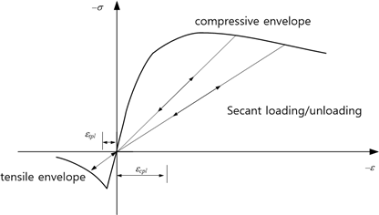
Fig. 7.2-7. Secant unloading/unloading of UGeneric
Under cyclic loading conditions, elastic behavior continues until the yield value corresponding to the plastic strain is reached, after which yielding follows the failure envelope. When secant loading/unloading is specified, there is no corresponding inelastic strain.
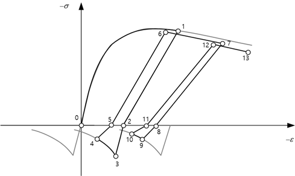
Fig. 7.2-8. Cyclic loading of UGeneric
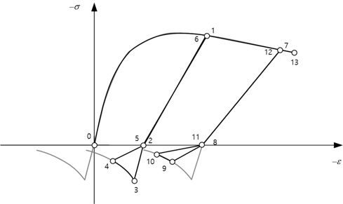
Fig. 7.2-9. Cyclic loading of UGeneric for tensile secant unloading
Example
*Function, Type=MPPCEnv, Name=MPP
27, 25000, 0.002 # fco, Ec, eco, ecu, fcc, esp
*Function, Type=MPPCIE, Name=MPPIE
MPP # compressiveEnv, epeak
*Function, Type=MaekawaTEnv, Name=Maekawa
MPP, 3, 0.4 # compressiveEnv,ft, c
*Material, Type=UGeneric, Name=Mander
Compression, MPP, MPPIE
Tension, Maekawa,Secant
*Material, Type=UGeneric, Name=Mander
Compression, MPP
Tension, Maekawa, Secant
*Material Type=USteel
Define uniaxial steel model based on Menegotto-Pinto model
*Material, Type=USteel, Name=name
E0, yield, E1, R0,a1,a2, a3,a4, eu, alpha, density
First dataline
- E0: Initial tangent modulus (required)
- yield: yield stress ( required )
- E1: Second tangent modulus (optional, default 0.)
- R0,a1,a2: curvature parameters (optional, default 20, 0, 0)
- a3,a3: isotropic hardening parameters (optional, default 0, 1.)
- eu: ultimate strain (optional, default 0). If eu = 0., then ultimate strain is not checked.
- alpha: themal expansion coefficient (optional, default 0.)
- density: density (optional, default 0.)
USteel uses Menegotto-Pinto model with some modifications of partial reloading problem. It can be used for modeling rebar or prestressing steel.
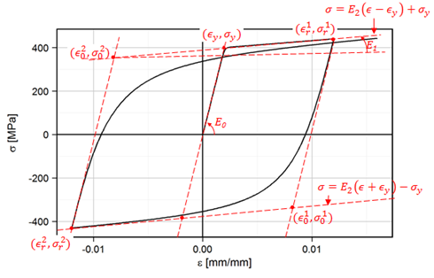
Fig. 7.2-10. Menegotto-Pinto Model
The recommended values of modeling rebar and 7-wire strand is given in the example.
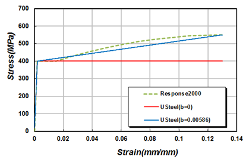
Fig. 7.2-11. Stress-strain curve of a weldable rebar with 400 MPa yield strength
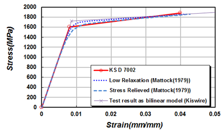
Fig. 7.2-12. Stress-strain curve of 7-wire strand with ultimate strength 1860 MPa
Example
# 400 MPa rebar without hardening
*Material, Type=USteel, Name=SD40
200000,400, 0, 20,18.5,0.15, 0.01, 7, 0.08
# E0, yield, E1, R0,a1,a2, a3,a4, eu, alpha, density
# 400 MPa weldable rebar without hardening
*Material, Type=USteel, Name=SD40W
200000, 400, 0, 20,18.5,0.15, 0.01, 7, 0.13
# E0, yield, E1, R0,a1,a2, a3,a4, eu, alpha, density
# 400 MPa rebar with hardening
*Material, Type=USteel, Name=SD40-U
200000, 400, 0.01282*200000, 20,18.5,0.15, 0.01, 7, 0.08
# 400 MPa weldable rebar with hardening
*Material, Type=USteel, Name=SD40W-U
200000, 400, 0.0586*200000, 20,18.5,0.15, 0.01, 7, 0.13
# Stress-relieved 7-wire strand with ultimate strength 1860 MPa
*Material, Type=USteel, Name=STendon
200000, 1652.891, 200000*0.03, 6, 0., 0., 0, 1, 0.0428
# Low relaxation 7-wire strand with ultimate strength 1860 MPa
*Material, Type=USteel, Name=RTendon
200000, 1694.915, 200000*0.025, 10,0.,0., 0, 1, 0.0415
*Material Type=GapHook
1축 gap-hook 재료를 지정
*Material, Type=GapHook, Name=name
kg,g, kh,h
First dataline
- kg,g: tangent and gap in compression part (optional, default 0.,0.)
- __kh,h:__tangent and hook tension part (optional,default 0.,0.)
GapHook 명령으로 tension only나 compression only 등으로 모델링할 수 있다. kg와 kh가 동시에 0이 될수 없다.
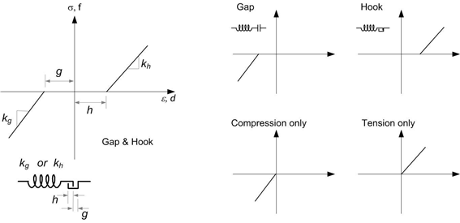
Fig. 7.2-13.GapHook Model
Example
*Material, Type=GapHook, Name=gaphook
5E5, 0.1, 4E5, 0.2 # kg, g, kh, h
# tension only
*Material, Type=GapHook, Name=cable
0, 0, 5E5 # kg, g, kh, h
# compression only
*Material, Type=GapHook, Name=contactSpring
5E5 # kg, g, kh, h
*Material, Type=Coheisve
Define cohesive zone material
*Material, Type=Cohesive, Name=name
Eaa, Ebb, Enn, Eab, Ebn, Ena
MaxStress|MaxRelativeDisplacement|QuadStress|QuadRelativeDisplacement, da0, db0, dn0
{Linear, df, kappa} | {Exponential, alpha, df, kappa}
First dataline
- Eaa, Ebb, Enn, Eab, Ebn, Ena: Stiffness components in each local direction (aa, bb, nn, ab, bn, na). Each value may be a scalar (stiffness) or a material name representing a stress-displacement relationship. Eab, Ebn, and Ena are optional. If omittd, they default to zero.
Optional two dataline if damage exists
- MaxStress|MaxSeparation|QuadStress|QuadRelativeDisplacement, da0, db0, dn0: MaxStress|MaxRelativedisplacement|QuadStress|QuadRelativeDisplacement indicate damage initiation criterion. da0, db0, and dn0 are directional relative displacements at damage initiation.
- Linear: Linear softening curve for damage evolution
- Exponential, alpha: Expoential softening curve and its parameter for damage evolution
- df: Effective relative displacement at failure
- kappa: Viscosity prameter. optional. defaut 0.
첫 번째 데이터라인만 정의하면 다음과 같은 탄성 모델을 정의하게 된다.
여기에서 아래첨자 a, b, n은 국부좌표계로 두 접선방향과 수직방향을 의미한다. 와 는 응력, 는상대변위이다. 나머지 세 데이터라인을 추가하면 다음과 같이 손상을 고려한 모델을 적용한다.
여기에서 D는 내부 상태에 따라 결정되는 손상지수(damage evolution index)로, 손상 발생 전까지는 0, 파괴시 1, 그 사이는 0-1사이 값을 갖는다. 복합응력상태(combined stress state 또는 mixed fracture mode)를 고려하기 위해 다음과 같이 유효상대변위(effective relative displacement)을 정의한다.
여기에서 <*>는 양수이면 그값을, 아니면 0을 만드는 Macaulay 함수이다.
손상을 정의하려면 손상발생시점과 손상발생 후 손상진전을 정의해야 한다. 손상발생시점은 다음 그림과 같은 네가지 기준을 선택적으로 적용할 수 있다. 손상 시작후 경계면응력은 softening 거동을 보인다. 이때 softening 함수는 선형(Linear) 또는 지수함수(Exponential) 함수를 적용할 수 있다.
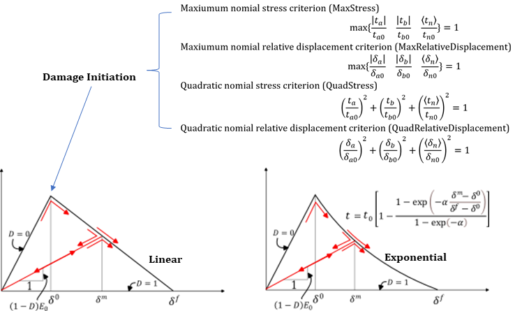
Fig. 7.2-14.Cohesive Materi
Example
# Unit N-mm
*Material, TYPE=Cohesive, Name=Epoxy_Elastic
100000, 100000, 50000
*Material, TYPE=Cohesive, Name=Epoxy_Interface
100000, 100000, 50000
QuadStrss, 0.02, 0.02, 0.05
Linear, 0.03
*Material, TYPE=Cohesive, Name=Adhesive_Bond
80000, 80000, 40000
MaxRelativeDisplacement, 0.015, 0.015, 0.01
Exponential, 2, 0.03
*Material Type=Acoustic
Acoustic solid 요소용 acoustic material을 지정
*Material, Type=Acoustic, Name=name
bulk, density
First dataline
- bulk: Bulk modulus (required). If zero bulk moduls is given, the acoustic medium is assumed to be incompressible (Laplace equation is used)
- density: density (required)
Example
*Material, Type=Acoustic, Name=water
2190E6, 1000